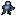
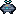
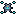
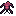
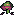
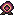
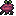

Automapolis // The Bastion Front
Current prototype
 shattered_plain
shattered_plain
 ash_waste
ash_waste
 ley_channel
ley_channel
 xenoforest
xenoforest
 fortified_reach
fortified_reach
 brood_mire
brood_mire
 bastion
bastion

soldier
 ravener
ravener
 brood_node
brood_node
 enclave
enclave
Human unit roster
recon_bike
striker_tank
siege_crawler
missile_carrier
hover_transport

gunship
interceptor

combat_drone
Alien unit roster

skitterling

acid_spitter
carapace_beast

burrower

living_artillery
winged_hunter
leviathan
biomass_harvester